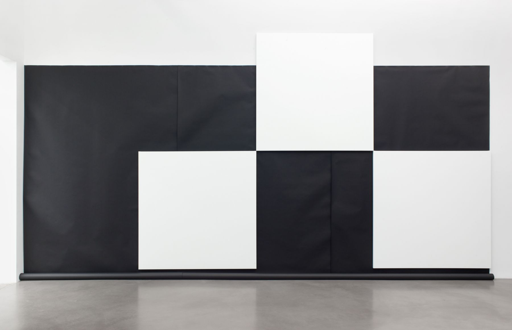
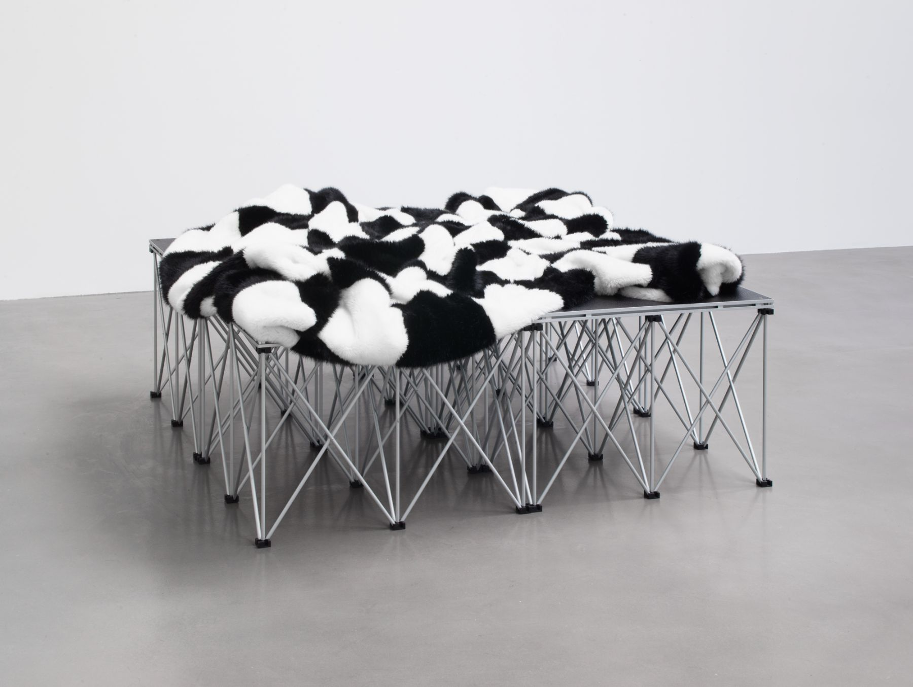
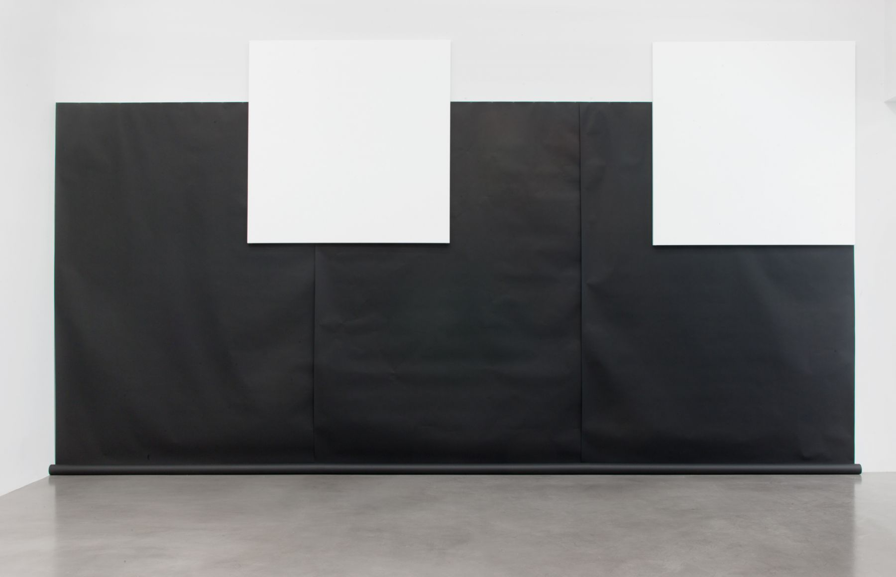

Heimo
Zobernig
chess painting
january 18 – february 17, 2018
456 W 18th Street
Zobernig creates a discrete installation that includes a series of eight white large-scale, primed, monochrome canvases, hung in scacchic configuration atop rolls of black photography paper. Repurposed mobile podiums with cozy, black-and-white checkered faux-fur blankets on top, offer platforms like daybeds, which invite the visitors to stay within the gallery rooms. Taking in the light and architecture of the space, they become part in the figure-ground-relationship of the spatial configuration.
Heimo Zobernig was born in Austria in 1958 and lives and works in Vienna. He studied at the Academy of Fine Arts, Vienna from 1977–1980, and at the city’s College of Applied Arts from 1980–1983. Zobernig has exhibited widely in various international shows including solo presentations at the Museum Ludwig, Cologne and the Malmö Konstall, Sweden (2016). In 2015, his work was presented in the Austrian Pavilion at the Venice Biennale. Other individual museum exhibitions include the Museo Nacional Centro de Arte Reina Sofia, Madrid, Spain (2012); a show which later traveled to the Kunsthaus Graz in Austria (2013); Kunsthalle Zürich and the Essl Museum, Vienna (2011); and two related solo presentations at the Fundação Calouste Gulbenkian in Lisbon (2009) and the Tate St. Ives (2008). In 2010 Zobernig received the Frederick Kiesler Prize for Architecture and the Arts in Vienna and the Roswitha Haftmann-Preis in Zürich, in 2016. The same year, a Catalogue raisonné of his designs of books, posters and catalogues was published by the Malmö Konstall and Verlag der Buchhandlung Walther König, Cologne.


